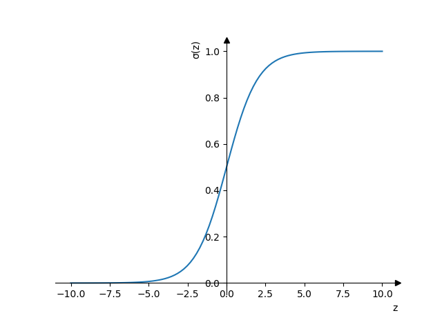
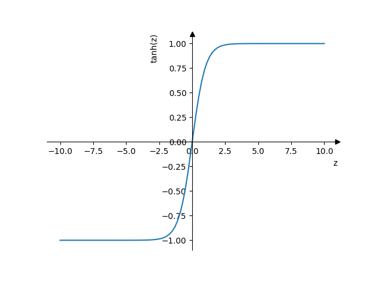
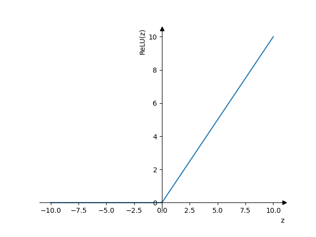
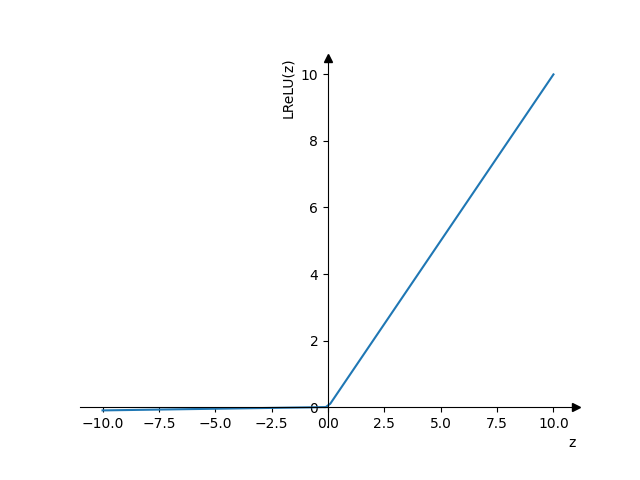

Логистическая регрессия
Содержание
1 \(\hat{y}\)
Это вероятность того, что \(y = 1\) при текущих входных параметрах \(x\)
\begin{equation} \hat{y} = P(y=1|x) \\ \hat{y} = \sigma{}(w^{T}x + b) \end{equation}2 \(z\)
\begin{equation}
z = w^{T}x + b
\end{equation}
3 sigmoid function \(\sigma{}\)
Ограничивает значение \(\hat{y}\) между \(0\) и \(1\).
\begin{equation} \sigma{}(z) = \frac{1}{1+e^{-z}} \end{equation}Если значение \(z\) сильно больше \(0\), то
\begin{equation} \sigma{}(z) \approx{} \frac{1}{1+0} \approx{} 1 \end{equation}Если значение \(z\) сильно меньше \(0\), то
\begin{equation} \sigma{}(z) \ approx{} \frac{1}{1+bignum} \approx{} 0 \end{equation}
4 Функции активации
- sigmoid
\(a = \frac{1}{1+e^{-z}}\)
- Значения будут от 0 до 1.
- Стоит применять только для выходного слоя
- Andrew Ng рекомендует никогда не использовать эту функцию активации кроме как для выходного слоя

- tanh
\(a = \tanh(z) = \frac{e^{z}-e^{-z}}{e^{z}+e^{-z}}\)
- Значения от -1 до 1, что значительнее удобнее чем [0,1] у сигмоиды в плане центрирования данных вокруг нуля.
- Почти всегда лучше чем сигмоида (исключение: выходной слой)

- ReLU (Rectified Linear Unit)
\(a = max(x, 0)\)
- подходит для большинства случаев
- работает быстрее всего

- Leaky ReLU
- \(a = max(0.01z, z)\)
- Работает лучше чем ReLU, но редко используется на практике
- Решает проблему ReLU с тем, что для отрицательных значений backpropagation будет занулять параметры

5 Вычисление размеров матриц
\(z^{[l]} = w^{T}x + b\)
- \(L\)
- глубина нейройной сети (количество слоёв, кроме входных параметров)
- \(n^{[l]}\)
- количество нейронов в слое \(l\)
- \(|z^{[l]}|\)
- \(z^{[l]} : (n^{[l]}, 1)\)
- \(|a^{[l]}|\)
- \(a^{[l]} : (n^{[l]}, 1)\)
- \(|x^{[l]}|\)
- \(x^{[l]} : (n^{[l-1]}, 1)\)
- \(|w^{[l]}|\)
- \(w^{[l]} : (n^{[l]}, n^{[l-1]})\)
- \(|dw^{[l]}|\)
- \(dw^{[l]} : (n^{[l]}, n^{[l-1]})\)
- \(|b^{[l]}|\)
- \(b^{[l]} : (n^{[l]}, 1)\)
- \(|db^{[l]}|\)
- \(db^{[l]} : (n^{[l]}, 1)\)
- \(m\)
- размер тренировчоных данных
- \(|Z^{[l]}|\)
- \(Z^{[l]} : (n^{[l]}, m)\)
- \(|dZ^{[l]}|\)
- \(dZ^{[l]} : (n^{[l]}, m)\)
- \(|A^{[l]}|\)
- \(A^{[l]} : (n^{[l]}, m)\)
- \(|dA^{[l]}|\)
- \(dA^{[l]} : (n^{[l]}, m)\)
- \(|W^{[l]}|\)
- \(W^{[l]} : (n^{[l]}, n^{[l-1]})\)
- \(|X^{[l]}|\)
- \(X^{[l]} : (n^{[l-1]}, m)\)
- \(|B^{[l]}|\)
- \(B^{[l]} : (n^{[l]}, 1)\)